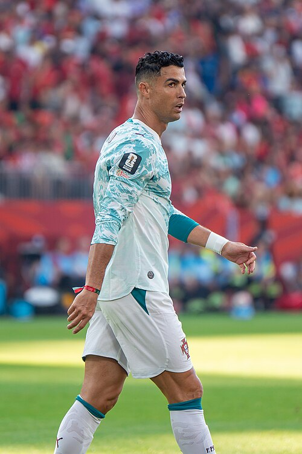

|
 |
Full Name | Cristiano Ronaldo dos Santos Aveiro |
|---|---|---|
| Nick Name | CR7 | |
| Date of birth | 5 February 1985 (age 41) | |
| Place of birth | Funchal, Madeira, Portugal | |
| Height | 1.87 m (6 ft 2 in) | |
| Player's Position | Forward | |
| Current team | Al-Nassr | |
| Shirt Number | 7 | |
| Youth Career |
1992–1995 Andorinha
1995–1997 Nacional 1997–2002 Sporting CP |
Cristiano Ronaldo dos Santos Aveiro was born on 5 February 1985 in the São Pedro parish of Funchal, the capital of the Portuguese island of Madeira. He grew up in the nearby parish of Santo António.[9][10] His mother, Maria Dolores dos Santos Viveiros Aveiro, worked as a cook in the hospitality industry and as a cleaning woman.[11][12] His father, José Dinis Aveiro, was a municipal gardener at the Junta de Freguesia of Santo António and a part-time kit man for the football club Andorinha.[F] Ronaldo's father had served in the Portuguese Army during the Portuguese Colonial War and saw combat in Angola; he was traumatised by his experiences, which led to a lifelong struggle with alcoholism.[16] Ronaldo has Cape Verdean ancestry through his great-grandmother,[17] Isabel da Piedade, who was born on the island of São Vicente, in what was then Portuguese Cape Verde.[18][19]
A versatile attacker, Ronaldo is capable of playing on either wing as well as through the centre of the pitch, and, while ostensibly right-footed, is very strong with both feet.[267] Tactically, Ronaldo has undergone several evolutions throughout his career. While at Sporting and during his first season at Manchester United, he was typically deployed as a traditional winger on the right side of midfield, where he regularly looked to deliver crosses into the penalty area. In this position, he was able to use his pace and acceleration, agility and technical skills to take on opponents in one-on-one situations. Ronaldo became noted for his dribbling and flair, often displaying an array of tricks and feints,[268][269] such as the step overs and so-called 'chops' that became his trademark;[270] he has also been known to use the flip-flap.[271]
| Title | Years | Club Name |
|---|---|---|
| Premier League | 2006–07 2007–08 2008–09 |
Manchester United |
| FA Cup | 2003-2004 | Manchester United |
| Football League Cup | 2005–06 2008–09 |